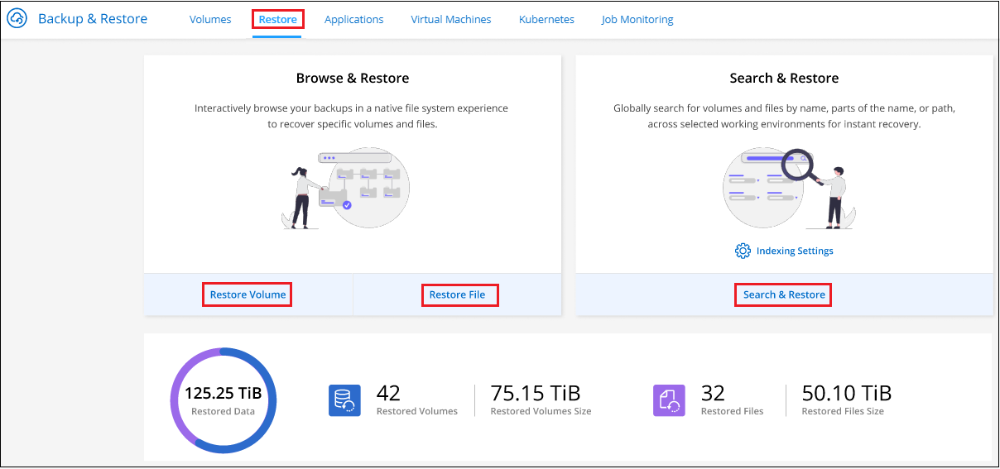
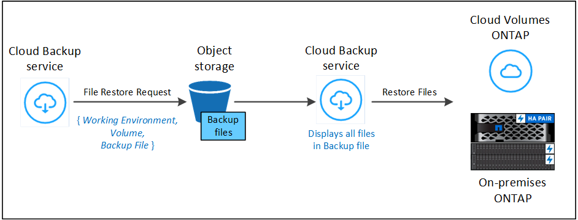
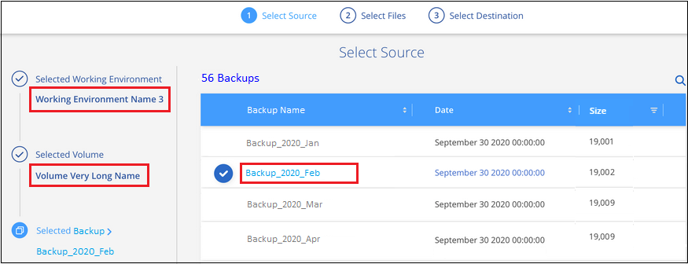
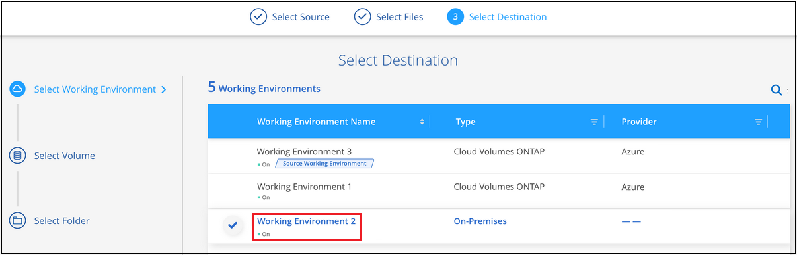
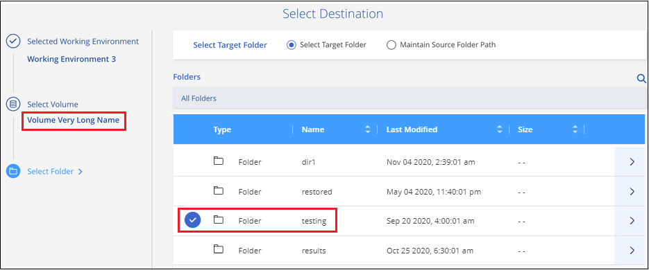
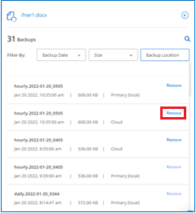

请求文档变更
请求文档变更 在 GitHub 上编辑
在 GitHub 上编辑 提供者指南
提供者指南从备份文件还原 ONTAP 数据
备份存储在云帐户的对象存储中，以便您可以从特定时间点还原数据。您可以从备份文件还原整个 ONTAP 卷，也可以从备份文件还原单个文件。
您可以将 * 卷 * （作为新卷）还原到原始工作环境，使用相同云帐户的其他工作环境或内部 ONTAP 系统。
您可以将 * 文件 * 还原到原始工作环境中的卷，使用相同云帐户的其他工作环境中的卷或内部 ONTAP 系统上的卷。
要将数据从备份文件还原到生产系统、需要有效的Cloud Backup许可证。
还原信息板
您可以使用还原信息板执行卷和文件还原操作。要访问还原信息板，请单击 Cloud Manager 顶部的 * 备份和还原 * ，然后单击 * 还原 * 选项卡。您也可以单击  > " 服务 " 面板中的备份和还原服务中的 * 查看还原信息板 * 。
> " 服务 " 面板中的备份和还原服务中的 * 查看还原信息板 * 。

|
必须已为至少一个工作环境激活 Cloud Backup ，并且必须存在初始备份文件。 |

如您所见，还原信息板提供了两种不同的方法来从备份文件还原数据： * 浏览和还原 * 和 * 搜索和还原 * 。
比较浏览和还原以及搜索和还原
概括地说，当您需要从过去一周或一个月还原特定卷或文件时， _Browse & Restore" 通常会更好—您知道文件的名称和位置，以及文件的最后一个状态良好的日期。通常，当您需要还原卷或文件时， _Search & Restore" 会更好，但您不记得确切的名称，卷所在的卷或最后一个卷状态良好的日期。
下表对这两种方法进行了比较。
| 浏览和还原 | 搜索和还原 |
|---|---|
浏览文件夹样式的结构以查找单个备份文件中的卷或文件 |
在 * 所有备份文件 * 中按部分或完整卷名称，部分或完整文件名，大小范围以及其他搜索筛选器搜索卷或文件 |
卷还原适用于存储在 Amazon S3 ， Azure Blob ， Google Cloud 和 NetApp StorageGRID 中的备份文件。文件还原适用于存储在 Amazon S3 和 Azure Blob 中的备份文件 |
卷和文件还原适用于存储在Amazon S3和Google Cloud中的备份文件 |
不处理已重命名或删除的文件 |
处理新创建 / 删除 / 重命名的目录以及新创建 / 删除 / 重命名的文件 |
浏览公有 和私有云中的结果 |
浏览公有 云和本地 Snapshot 副本的结果 |
文件还原需要单独的 Cloud Restore 实例 |
不需要 Cloud Restore 实例 |
无需额外的云提供商资源 |
每个帐户需要额外的存储分段和AWS或Google资源 |
浏览单个文件的备份时与 Cloud Restore 实例相关的成本 |
扫描备份和卷以查找搜索结果时与AWS或Google资源相关的成本 |
在使用任一还原方法之前，请确保已为环境配置了唯一的资源要求。以下各节将介绍这些要求。
请参见要使用的还原操作类型的要求和还原步骤：
使用浏览和还原还原 ONTAP 数据
在开始还原卷或文件之前，您应知道要还原的卷或文件的名称，卷所在工作环境的名称以及要从中还原的备份文件的大致日期。
-
注意： * 如果要还原的卷的备份文件位于归档存储中（从 ONTAP 9.10.1 开始可用于 AWS 和 Azure ），则还原操作将需要较长时间并产生成本。此外，目标集群还必须运行 ONTAP 9.10.1 或更高版本。
浏览并还原支持的工作环境和对象存储提供程序
您可以将卷或单个文件从 ONTAP 备份文件还原到以下工作环境：
| 备份文件位置 | 目标工作环境 | |
|---|---|---|
* 卷还原 * |
* 文件还原 * |
|
Amazon S3 |
AWS 内部 ONTAP 系统中的 Cloud Volumes ONTAP |
AWS 内部 ONTAP 系统中的 Cloud Volumes ONTAP |
Azure Blob |
Azure 内部 ONTAP 系统中的 Cloud Volumes ONTAP |
Azure 内部 ONTAP 系统中的 Cloud Volumes ONTAP |
Google Cloud 存储 |
Google 内部 ONTAP 系统中的 Cloud Volumes ONTAP |
|
NetApp StorageGRID |
内部部署 ONTAP 系统 |
|
请注意， " 内部 ONTAP 系统 " 的引用包括 FAS ， AFF 和 ONTAP Select 系统。
|
|
如果备份文件驻留在归档存储中，则仅支持卷还原。使用浏览和还原时，当前不支持从归档存储还原文件。 |
使用浏览和还原还原卷
从备份文件还原卷时， Cloud Backup 会使用备份中的数据创建一个 new 卷。您可以将数据还原到原始工作环境中的卷，也可以还原到与源工作环境位于同一云帐户中的其他工作环境。您还可以将卷还原到内部 ONTAP 系统。

如您所见，要执行卷还原，您需要知道工作环境名称，卷名称和备份文件日期。
以下视频显示了还原卷的快速演练：
-
选择 * 备份和还原 * 服务。
-
单击 * 还原 * 选项卡，此时将显示还原信息板。
-
在 Browse & Restore 部分中，单击 * 还原卷 * 。

-
在 _Select Source" 页面中，导航到要还原的卷的备份文件。选择 * 工作环境 * ， * 卷 * 以及具有要还原的日期 / 时间戳的 * 备份 * 文件。

-
单击 * 继续 * 。
-
在 Select Destination 页面中，选择要还原卷的 * 工作环境 * 。

-
如果您选择内部 ONTAP 系统，但尚未配置与对象存储的集群连接，则系统会提示您输入追加信息：
-
从 Amazon S3 还原时，请选择目标卷所在 ONTAP 集群中的 IP 空间，输入您创建的用户的访问密钥和机密密钥，以便为 ONTAP 集群授予对 S3 存储分段的访问权限。 此外，还可以选择一个专用 VPC 端点来实现安全数据传输。
-
从 Azure Blob 还原时，请选择目标卷所在的 ONTAP 集群中的 IP 空间，选择 Azure 订阅以访问对象存储，并可选择通过选择 vNet 和子网选择用于安全数据传输的私有端点。
-
从 Google Cloud Storage 还原时，请选择 Google Cloud Project 以及访问密钥和机密密钥以访问对象存储，备份存储所在的区域以及目标卷所在的 ONTAP 集群中的 IP 空间。
-
从 StorageGRID 还原时，请选择访问对象存储所需的访问密钥和机密密钥，以及目标卷所在的 ONTAP 集群中的 IP 空间。
-
-
输入要用于还原的卷的名称，然后选择此卷要驻留的 Storage VM 。默认情况下，使用 * <source_volume_name>_Restore* 作为卷名称。

只有在将卷还原到内部 ONTAP 系统时，您才能选择卷将用于其容量的聚合。
如果您要从位于归档存储层（从 ONTAP 9.10.1 开始提供）中的备份文件还原卷，则可以选择还原优先级。
-
单击 * 还原 * ，您将返回到还原信息板，以便查看还原操作的进度。
Cloud Backup 会根据您选择的备份创建一个新卷。您可以 "管理此新卷的备份设置" 根据需要。
请注意，从归档存储中的备份文件还原卷可能需要数分钟或数小时，具体取决于归档层和还原优先级。您可以单击 * 作业监控 * 选项卡查看还原进度。
使用浏览和还原还原 ONTAP 文件
如果您只需要从 ONTAP 卷备份还原几个文件，则可以选择还原单个文件，而不是还原整个卷。您可以将文件还原到原始工作环境中的现有卷，也可以还原到使用同一云帐户的其他工作环境。您还可以将文件还原到内部 ONTAP 系统上的卷。
如果选择多个文件，则所有文件都将还原到您选择的同一目标卷。因此，如果要将文件还原到不同的卷，则需要多次运行还原过程。

|
如果备份文件驻留在归档存储中，则无法还原单个文件。在这种情况下，您可以从尚未归档的较新备份文件还原文件，也可以从归档的备份还原整个卷，然后访问所需的文件，或者使用搜索和还原还原还原文件。 |
前提条件
-
要执行文件还原操作， Cloud Volumes ONTAP 或内部 ONTAP 系统中的 ONTAP 版本必须为 9.6 或更高版本。
-
从备份文件还原单个文件使用单独的还原实例 / 虚拟机。请参见 "要为文件还原操作部署的实例类型" 并确保您的环境已准备就绪。
-
从 Amazon S3 上的备份还原文件需要将特定的 AWS EC2 权限添加到为 Cloud Manager 提供权限的用户角色中。您还需要允许出站 Internet 访问以联系某些端点。 "验证您的配置是否已准备好还原文件"。
-
AWS 跨帐户还原需要在 AWS 控制台中手动执行操作。请参见 AWS 主题 "授予跨帐户存储分段权限" 了解详细信息。
-
从 Azure Blob 上的备份还原文件需要能够访问出站 Internet 以联系特定端点。 "验证您的配置是否已准备好还原文件"。
文件还原过程
此过程如下所示：
-
如果要从卷备份中还原一个或多个文件，请单击 * 还原 * 选项卡，单击 Browse & Restore 下的 * 还原文件 * ，然后选择文件所在的备份文件。
-
还原实例将启动并显示选定备份文件中的文件夹和文件。
-
注意： * 首次还原文件时，还原实例将部署在云提供商的环境中。
-
-
选择要从该备份还原的一个或多个文件。
-
选择要还原文件的位置（工作环境，卷和文件夹），然后单击 * 还原 * 。
-
文件将被还原，还原实例将在一段时间不活动后关闭，以节省成本。

如您所见，要执行文件还原，您需要知道工作环境名称，卷名称，备份文件日期和文件名。
使用浏览和还原还原文件
按照以下步骤将文件从 ONTAP 卷备份还原到卷。您应知道要用于还原文件的卷名称和备份文件的日期。此功能使用实时浏览功能，以便您可以查看每个备份文件中的目录和文件列表。
以下视频显示了还原单个文件的快速演练：
-
选择 * 备份和还原 * 服务。
-
单击 * 还原 * 选项卡，此时将显示还原信息板。
-
在 Browse & Restore 部分中，单击 * 还原文件 * 。

-
在 _Select Source" 页面中，导航到包含要还原的文件的卷的备份文件。选择具有要从中还原文件的日期 / 时间戳的 * 工作环境 * ， * 卷 * 和 * 备份 * 。

-
单击 * 继续 * ，此时将启动还原实例。几分钟后，将显示卷备份中的文件夹和文件列表。
-
注意： * 首次还原文件时，还原实例会部署在云提供商的环境中，因此，首次执行此步骤可能需要几分钟的时间。

-
-
在 Select Files 页面中，选择要还原的一个或多个文件，然后单击 * 继续 * 。要帮助您查找文件，请执行以下操作：
-
如果看到文件名，可以单击它。
-
您可以单击搜索图标并输入文件的名称以直接导航到该文件。
-
您可以使用在文件夹中向下导航级别
 按钮以查找文件。
按钮以查找文件。选择文件时，这些文件将添加到页面左侧，以便您可以查看已选择的文件。如果需要，您可以单击文件名旁边的 * x * 来从此列表中删除文件。
-
-
在 Select Destination 页面中，选择要还原文件的 * 工作环境 * 。

如果选择内部集群，但尚未配置与对象存储的集群连接，则系统会提示您输入追加信息：
-
从 Amazon S3 还原时，输入目标卷所在 ONTAP 集群中的 IP 空间以及访问对象存储所需的 AWS 访问密钥和机密密钥。
-
从 Azure Blob 还原时，输入目标卷所在 ONTAP 集群中的 IP 空间。
-
-
然后选择 * 卷 * 和 * 文件夹 * 以还原文件。

还原文件时，您可以选择一些位置选项。
-
选择 * 选择目标文件夹 * 后，如上所示：
-
您可以选择任何文件夹。
-
您可以将鼠标悬停在某个文件夹上并单击
在行末尾展开以深入到子文件夹，然后选择一个文件夹。
-
-
如果选择的目标工作环境和卷与源文件所在的位置相同，则可以选择 * 维护源文件夹路径 * 将文件或所有文件还原到源结构中存在的同一文件夹。所有相同的文件夹和子文件夹都必须已存在；不会创建文件夹。
-
-
单击 * 还原 * ，您将返回到还原信息板，以便查看还原操作的进度。您也可以单击 * 作业监控 * 选项卡查看还原进度。
还原实例在一段时间处于非活动状态后会关闭，以节省您的资金，以便只有在处于活动状态时才会产生成本。
使用搜索和还原还原 ONTAP 数据
您可以使用搜索和还原从 ONTAP 备份文件还原卷或单个文件。通过搜索和还原，您可以从存储在云存储上的特定提供商的所有备份中搜索特定卷或文件，然后执行还原。您无需知道确切的工作环境名称或卷名称 - 搜索将查看所有卷备份文件。
搜索操作还会查找 ONTAP 卷中存在的所有本地 Snapshot 副本。与从备份文件还原数据相比，从本地 Snapshot 副本还原数据的速度更快，成本更低，因此您可能需要从 Snapshot 还原数据。您可以从 " 画布 " 上的 " 卷详细信息 " 页面将快照还原为新卷。
从备份文件还原卷时， Cloud Backup 会使用备份中的数据创建一个 new 卷。您可以将数据还原为原始工作环境中的卷，也可以还原到与源工作环境位于同一云帐户中的其他工作环境。您还可以将卷还原到内部 ONTAP 系统。
您可以将文件还原到原始卷位置，同一工作环境中的其他卷或使用同一云帐户的其他工作环境。您还可以将文件还原到内部 ONTAP 系统上的卷。
如果要还原的卷的备份文件驻留在归档存储中（从 ONTAP 9.10.1 开始可用于 AWS ），则还原操作将需要较长的时间并产生额外成本。请注意，目标集群也必须运行 ONTAP 9.10.1 或更高版本，并且当前不支持从归档存储还原文件。
开始之前，您应了解要还原的卷或文件的名称或位置。
以下视频显示了还原单个文件的快速演练：
搜索和还原支持的工作环境和对象存储提供程序
您可以将卷或单个文件从 ONTAP 备份文件还原到以下工作环境：
| 备份文件位置 | 目标工作环境 | |
|---|---|---|
* 卷还原 * |
* 文件还原 * |
|
Amazon S3 |
AWS 内部 ONTAP 系统中的 Cloud Volumes ONTAP |
AWS 内部 ONTAP 系统中的 Cloud Volumes ONTAP |
Google Cloud 存储 |
Google 内部 ONTAP 系统中的 Cloud Volumes ONTAP |
Google 内部 ONTAP 系统中的 Cloud Volumes ONTAP |
请注意， " 内部 ONTAP 系统 " 的引用包括 FAS ， AFF 和 ONTAP Select 系统。
前提条件
-
集群要求：
-
ONTAP 版本必须为 9.8 或更高版本。
-
卷所在的 Storage VM （ SVM ）必须已配置数据 LIF 。
-
必须在卷上启用 NFS 。
-
必须在 SVM 上激活 SnapDiff RPC 服务器。在工作环境中启用索引时， Cloud Manager 会自动执行此操作。
-
-
AWS 要求：
-
必须将特定的 Amazon Athena ， AWS glue 和 AWS S3 权限添加到为 Cloud Manager 提供权限的用户角色中。 "确保已正确配置所有权限"。
请注意，如果您已经在使用 Cloud Backup 时使用了过去配置的连接器，则现在需要将 Athena 和粘附权限添加到 Cloud Manager 用户角色中。这些是新的，搜索和还原需要它们。
-
-
Google Cloud要求：
-
必须将特定的Google BigQuery权限添加到为Cloud Manager提供权限的用户角色中。 "确保已正确配置所有权限"。
请注意、如果您已经在使用Cloud Backup时使用了过去配置的连接器、则现在需要将BigQuery权限添加到Cloud Manager用户角色中。这些是新的，搜索和还原需要它们。
-
搜索和还原过程
此过程如下所示：
-
在使用搜索和还原之前，您需要在要从中还原卷或文件的每个源工作环境上启用 " 索引编制 " 。这样，索引目录就可以跟踪每个卷的备份文件。
-
如果要从卷备份还原卷或文件，请在 Search & Restore 下单击 * 搜索和还原 * 。
-
按部分或完整卷名称，部分或完整文件名，大小范围，创建日期范围和其他搜索筛选器输入卷或文件的搜索条件，然后单击 * 搜索 * 。
" 搜索结果 " 页面将显示文件或卷与您的搜索条件匹配的所有位置。
-
单击 * 查看所有备份 * 以查看要用于还原卷或文件的位置，然后在要使用的实际备份文件上单击 * 还原 * 。
-
选择要还原卷或文件的位置，然后单击 * 还原 * 。
-
卷或文件已还原。

如您所见，您实际上只需要知道部分卷或文件名， Cloud Backup 会搜索与您的搜索匹配的所有备份文件。
为每个工作环境启用索引目录
在使用搜索和还原之前，您需要在计划从中还原卷或文件的每个源工作环境上启用 " 索引编制 " 。这样，索引目录就可以跟踪每个卷和每个备份文件，从而使搜索非常快速高效。
启用此功能后、Cloud Backup会在SVM上为卷启用SnapDiff v3、并执行以下操作：
-
对于存储在AWS中的备份、它会配置一个新的S3存储分段和 "Amazon Athena 交互式查询服务" 和 "AWS 无服务器数据集成服务"。
-
对于存储在Google Cloud中的备份、它会配置一个新存储分段和 "Google Cloud BigQuery服务" 在帐户/项目级别配置。如果您的工作环境已启用索引，请转到下一节以还原数据。
要为工作环境启用索引编制，请执行以下操作：
-
如果尚未为工作环境编制索引，请在 "Restore Dashboard" 中的 Search & Restore 下，单击 * 为工作环境启用索引 * ，然后单击 * 为工作环境启用索引 * 。
-
如果至少有一个工作环境已编制索引，请在 "Restore Dashboard" 中的 "_Search & Restore" 下，单击 * 索引设置 * ，然后单击 * 为工作环境启用索引 * 。
配置完所有服务并激活索引目录后，工作环境将显示为 "Active" 。

根据工作环境中卷的大小以及云中备份文件的数量，初始索引编制过程可能需要长达一小时的时间。之后，它会每小时透明地更新一次，并进行增量更改，以保持最新状态。
使用搜索和还原还原卷和文件
你先请 已为您的工作环境启用索引编制，您可以使用搜索和还原来还原卷或文件。这样，您就可以使用多种筛选器来查找要从所有备份文件还原的确切文件或卷。
-
选择 * 备份和还原 * 服务。
-
单击 * 还原 * 选项卡，此时将显示还原信息板。
-
在 Search & Restore 部分中，单击 * 搜索和还原 * 。
-
在 Search & Restore 页面中：
-
在搜索栏中，输入完整或部分卷名称或文件名。
-
在筛选器区域中，选择筛选条件。例如，您可以选择数据所在的工作环境和文件类型，例如 .doc 文件。
-
-
单击 * 搜索 * ，搜索结果区域将显示具有与您的搜索匹配的文件或卷的所有位置。

-
单击 * 查看所有备份 * 以查看包含要还原的数据的位置，以显示包含卷或文件的所有备份文件。

-
对于要用于从云还原卷或文件的备份文件，请单击 * 还原 * 。
请注意，结果还会标识搜索中包含该文件的本地卷 Snapshot 副本。此时， * 还原 * 按钮对快照不起作用，但如果要从 Snapshot 副本而非备份文件还原数据，请记下卷的名称和位置，然后打开 " 画布 " 上的 " 卷详细信息 " 页面。 并使用 * 从 Snapshot 副本还原 * 选项。
-
选择要还原卷或文件的位置，然后单击 * 还原 * 。
-
对于文件，您可以还原到原始位置，也可以选择其他位置
-
对于卷，您可以选择位置。
-
卷或文件将还原，您将返回到还原信息板，以便查看还原操作的进度。您也可以单击 * 作业监控 * 选项卡查看还原进度。
对于已还原的卷，您可以 "管理此新卷的备份设置" 根据需要。